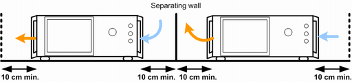

Positioning the Instrument
The R&S CMW is designed for use under laboratory conditions. It can be used in standalone operation on a bench top or can be installed in a rack.
The general ambient conditions required at the operating site are as follows:
- The temperature must be in the ranges specified for operation and for compliance with specifications (see data sheet).
- All fan openings including the rear panel perforations must be unobstructed. The distance between the walls and the left and right side and the rear panel of the instrument must be at least 10 cm.
If you place several instruments side by side, keep a minimum distance of 20 cm. Ensure that the instruments on the left do not draw in the preheated air from their neighbors on the right.
- Operation in a standard 19'' instrument rack according to the instructions of the manufacturer avoids overheating; see "Mounting in a Rack".